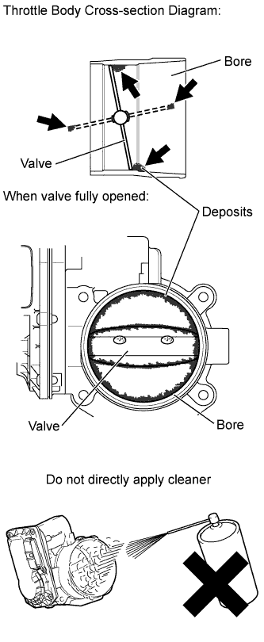

DTC P2109 Throttle / Pedal Position Sensor "A" Minimum Stop Performance |
| DTC No. | DTC Detection Condition | Trouble Area |
| P2109 | The ISC learned value is approximately 3 times larger than normal even though the actual intake air amount during idling is within the normal range (up to 1.5 times the normal amount) (5 trip detection logic). | Throttle body assembly |
| 1.CHECK FOR ANY OTHER DTCS OUTPUT (IN ADDITION TO P2109) |
Connect the intelligent tester to the DLC3.
Turn the engine switch on (IG).
Turn the tester on.
Enter the following menus: Powertrain / Engine and ECT / DTC.
Read the DTCs.
| Result | Proceed to |
| Only DTC P2109 is output | A |
| DTC P2109 and other DTCs are output | B |
|
| ||||
| A | |
| 2.CHECK FREEZE FRAME DATA |
Connect the intelligent tester to the DLC3.
Turn the engine switch on (IG).
Using the intelligent tester, check "ISC Learning Value" in the freeze frame data (Click here).
| NEXT | |
| 3.REMOVE FOREIGN OBJECT (CLEAN THROTTLE BODY ASSEMBLY) |
|  |
Clean off any deposits from the inside of the throttle body.
Push open the throttle valve and wipe off any carbon from the valve and bore using a cloth soaked in non-residue solvent.
| NEXT | |
| 4.READ VALUE USING INTELLIGENT TESTER (ISC LEARNING VALUE) |
Remove the EFI and ETCS fuses at the same time, wait 60 seconds or more, and then reinstall the fuses to reset the ISC learned value.
Start the engine and fully warm it up.
Leave the vehicle idling for 3 minutes or more and check that the engine speed is at the standard idling speed.
Using the intelligent tester, check "ISC Learning Value".
|
| ||||
| OK | ||
| ||